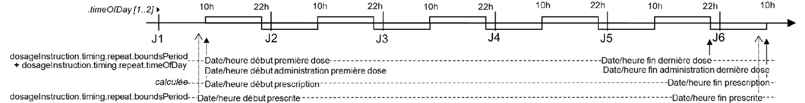

Guide d'implémentation du médicament
0.1.0 - ci-build

Guide d'implémentation du médicament
0.1.0 - ci-build

Guide d'implémentation du médicament - Local Development build (v0.1.0) built by the FHIR (HL7® FHIR® Standard) Build Tools. See the Directory of published versions
La prescription est un ensemble de lignes de prescription, représentées chacune par une ressource MedicationRequest profilée FRInpatientMedicationRequest.
La prescription en tant que telle (le regroupement de lignes de prescription), n’est pas représenté par une ressource FHIR. En accord avec les guidelines d’HL7 International, le lien entre les différentes ressources regroupées dans une prescription est représenté par l’élément MedicationRequest.groupIdentifier.
Chaque ligne de prescription est composée d’un médicament prescrit et de sa posologie.
Le médicament prescrit est représenté par l’élément MedicationRequest.medication[x] (1..1) du profil FRInpatientMedicationRequest, celui-ci peut être représenté sous forme de ressource Medication ou de concept codé (CodeableConcept).
Selon que ce médicament prescrit est un médicament simple ou un médicament composé de plusieurs médicaments simples, le médicament prescrit est représenté par deux variantes de ressource Medication:
Dépendance des ressources profilées par Interop’Santé
Noter qu’un médicament simple peut être une association de plusieurs principes actifs. Ce n’en est pas moins un médicament simple représenté par une ressource FrMedicationNonCompound. Ex : CODOLIPRANE 500 mg/30 mg, cpr dont le code UCD est 3400893936047 contenant paracétamol+codéine 500 mg+30 mg*
La posologie est représentée par l’élément dosageInstruction de la ressource FRInpatientMedicationRequest.
Date de début, date de fin et durée de prescription
Elles traduisent la période d’exécution de la prescription.
Cette information est portée indivuellement par chaque ligne de prescription, c’est à dire au niveau de la ressource MedicationRequest profilée par FRInpatientMedicationRequest, comme paramètre de la posologie prescrite, dans l’élément dosageInstruction de type Dosage, sous-élément timing de type Timing
.dosageInstruction.timing.repeat.boundsPeriod.start.dosageInstruction.timing.repeat.boundsPeriod.endCes dates de début et de fin de prescription, de même que la durée de prescription, ne sont pas des consignes de dispensation. Elles ne figurent donc pas dans les éléments .validityPeriod et .expectedSupplyDuration de l’élément .dispensationRequest.
En prescription intrahospitalière, il n’y a généralement pas de consigne de dispensation formulée par le prescripteur. Il n’y a donc généralement pas usage de l’élément .dispensationRequest.
Ces précisions concernent les dates et durée de prescription de la ligne de prescription représentée par une ressource MedicationRequest profilée FRInPatientMedicationRequest.
Elles concernent également les règles définissant la première dose prescrite et la dernière dose prescrite.
Deux dates, de début et de fin, de la ligne de prescription doivent être considérées :
Date/heure de fin prescrite de la ligne de prescription (MedicationRequest)
Définit la date/heure de fin exprimée par le médecin lors de sa prescription.
La première dose prescrite:
Date/heure de fin prescrite de la ligne de prescription (MedicationRequest)
Définit la date/heure de fin exprimée par le médecin lors de sa prescription.
La dernière dose prescrite:
dosageInstructionLa date/heure de fin d’administration de la dernière dose (sa date/heure de début + sa durée d’administration) peut être supérieure à date/heure de fin prescrite.
Durée de prescription:
Elle est liée aux deux paramétres précédents. Quand ces trois paramètres sont exposés à l’utilisateur pour saisie, en général il en fixe deux et le troisième est calculé.
Les unités UCUM suivantes sont utilisées :
jour (code = d) : égale 24h.
mois (code = mo) : égale 28, 29, 30 ou 31 jours selon les mois impliqués.
Garantie du nombre de doses prescrites sur une période donnée:
Pour garantir qu’une prescription de, par exemple, 3 doses par jour pendant 5 jours, donne bien systématiquement 15 doses prescrites, comme logiquement attendu, et non pas 15 ou 16 en fonction des circonstances, il est spécifié dans ce guide d’implémentation que la date/heure de fin prescrite est exclue. En d’autres termes, l’intervalle [ date de début prescrite, date de fin prescrite [ est semi-ouvert.
Illustration Date de fin prescrite exclue : 15 doses (3/j x 5j = 15)

En effet, si la date de début prescrite est égale à la date de début de la premiére dose, un intervalle fermé incluant de la date de fin prescrite conduira à la prescription de 16 doses.
Illustration
Si la date de fin prescrite était incluse : 16 doses (3/j x 5j = 16) !

Note: Dans FHIR, le type Period, utilisé pour porter le couple (date de début, date de fin), stipule que les bornes, start et end, sont incluses. L’interval est fermé.
Un interval semi-ouvert, par exemple [ 2021-02-14T12:34:56, 201-05-14T12:34:56 [, se traduira par un élément Period dans lequel
Rappel: Dans FHIR, le type datetime impose de donner les horaires à la seconde près lorsque l’heure est renseignée : format hh:mn:ss. Il est précisé que l’utilisateur fait son affaire de la granularité à l’heure ou à la minute près en remplissant les minutes et les secondes manquantes par des 00.
Néanmoins, pour exprimer l’horaire de fin exclu à la granularité horaire ou minute, il conviendra de remplir les minutes ou secondes manquantes par 59.
Par exemple 3j à partir du 14 fév 2021 12h34 (résolution à la minute)
ou 3j à partir du 14 fév 2021 12h (résolution à la tranche horaire)
Date/heure de début effective et Date/heure de fin effective de la ligne de prescription:
Ces deux dates ne figurent pas dans MedicationRequest R4.
Dans la R5, un élément [effectiveDosePeriod](https://www.hl7.org/fhir/medicationrequest-definitions.html#MedicationRequest.effectiveDosePeriod) conçu pour accueillir ces deux dates a été ajouté.
Note PN13:
Les règles de gestion suivantes doivent être appliquées pour définir ces deux dates en fonction de la collection de dosageInstruction associée au MedicationRequest. Elles reprennent celles de PN13 et sont conformes à la définition de la R5.
dosageInstruction.dosageInstruction.Illustration
1 comprimé 3 fois par jour (7h, 12h, 18h) pendant 5 jours, prescrit à 10h30, à partir de maintenant (10h30), donc 1ère dose à 12h.

Notes
Dans cet exemple,
dosageInstruction.doseAndRate.RateRatio.denominator, à la date/heure de début d’administration de cette dernière dose.dosageInstruction rattachés à MedicationRequest, c’est l’interprétation de la collection de dosageInstruction qui doit conduire au calcul de ces dates/heures début/fin effectives de MedicationRequest (fonction min() pour les dates de début, fonction max() pour les date de fin).Illustration G5 1L sur 12h, 2 fois par jour (10h, 22h) pendant 5 jours, prescrit à 9h30, à partir de maintenant (9h30), donc 1ère dose à 10h. 
Note Dans cet exemple
Pour les posologies conditionnelles d’un évènement aléatoire, « si douleur » par exemple, il faut prendre comme dates/heures de début/fin de MedicationRequest celles de la période de prise en compte de l’évènement.